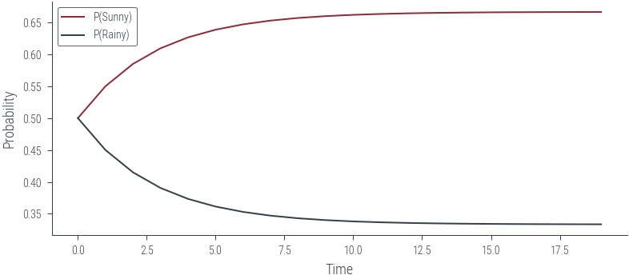

import torch
import torch.autograd.functional as F
import torch.distributions as dist
import numpy as np
import matplotlib.pyplot as plt
import pandas as pd
%matplotlib inline
# Retina display
%config InlineBackend.figure_format = 'retina'Parameters
from tueplots import bundles
plt.rcParams.update(bundles.beamer_moml())
#plt.rcParams.update(bundles.icml2022())
# Also add despine to the bundle using rcParams
plt.rcParams['axes.spines.right'] = False
plt.rcParams['axes.spines.top'] = False
# Increase font size to match Beamer template
plt.rcParams['font.size'] = 16
# Make background transparent
plt.rcParams['figure.facecolor'] = 'none'# Prior distribution
P = torch.tensor([0.5, 0.5])
# Transition matrix
A = torch.tensor([[0.9, 0.1],
[0.2, 0.8]])
# States
STATES = {0: 'Sunny', 1: 'Rainy'}Sampling from discrete state Markov chain
# Generate data from the Markov chain
def generate_data(n_samples=10, seed=0):
torch.manual_seed(seed)
data = torch.zeros(n_samples, dtype=torch.long)
data[0] = dist.Categorical(P).sample()
for i in range(1, n_samples):
data[i] = dist.Categorical(A[data[i-1]]).sample()
return data
def map_state(x_arr):
return [STATES[x.item()] for x in x_arr]generate_data(10, 0)
map_state(generate_data(10, 0))['Rainy',
'Rainy',
'Rainy',
'Rainy',
'Rainy',
'Sunny',
'Sunny',
'Sunny',
'Sunny',
'Sunny']map_state(generate_data(10, 1))['Sunny',
'Sunny',
'Sunny',
'Sunny',
'Rainy',
'Rainy',
'Rainy',
'Sunny',
'Sunny',
'Sunny']Stationary distribution
PS = []
PR = []# P(Sunny) at t=0
PS.append(P[0].item())
PS[0.5]# P (Rainy) at t=0
PR.append(P[1].item())
PR[0.5]def PS_t(t):
return PS[t-1] * A[0, 0].item() + PR[t-1] * A[1, 0].item()
def PR_t(t):
return PS[t-1] * A[0, 1].item() + PR[t-1] * A[1, 1].item()for t in range(1, 20):
PS.append(PS_t(t))
PR.append(PR_t(t))PS, PR([0.5,
0.5499999895691872,
0.5849999801814558,
0.609499971553684,
0.6266499634787454,
0.6386549558053933,
0.647058448423374,
0.6529408912524431,
0.657058599234283,
0.6599409928265687,
0.6619586663486209,
0.6633710358232277,
0.6643596924658253,
0.6650517501268584,
0.6655361885013855,
0.6658752933757711,
0.6661126648003464,
0.6662788228102565,
0.6663951314300427,
0.6664765454768411],
[0.5,
0.45000000670552254,
0.4150000105053187,
0.39050001224130404,
0.37335001251176025,
0.36134501174174294,
0.352941510233172,
0.34705905820045785,
0.3429413407958347,
0.34005893762736905,
0.33804125442175925,
0.33662887518843054,
0.33564020873449596,
0.3349481412252955,
0.33446369297681955,
0.33412457821043834,
0.33388719688123464,
0.3337210289578531,
0.33360471041840567,
0.333523286447613])plt.plot(PS, label='P(Sunny)')
plt.plot(PR, label='P(Rainy)')
plt.xlabel('Time')
plt.ylabel('Probability')
plt.legend()<matplotlib.legend.Legend at 0x7f1af7260910>
A@A, torch.matrix_power(A, 2)(tensor([[0.8300, 0.1700],
[0.3400, 0.6600]]),
tensor([[0.8300, 0.1700],
[0.3400, 0.6600]]))Vectorised version
# Distribution of states at t = 0
Ptensor([0.5000, 0.5000])# P(Sunny) at t = 1
print("--"*20)
print("P(Sunny) at t = 1")
print(P[0] * A[0, 0] + P[1] * A[1, 0])
# P(Rainy) at t = 1
print("--"*20)
print("P(Rain) at t = 1")
print(P[0] * A[0, 1] + P[1] * A[1, 1])
# Distribution of states at t = 1
print("--"*20)
print("Distribution of states at t = 1")
print(P@A)----------------------------------------
P(Sunny) at t = 1
tensor(0.5500)
----------------------------------------
P(Rain) at t = 1
tensor(0.4500)
----------------------------------------
Distribution of states at t = 1
tensor([0.5500, 0.4500])# Distribution of states at t = 2
print("--"*20)
print("Distribution of states at t = 2")
print(P@A@A)
# Using torch.matrix_power
print("--"*20)
print("Distribution of states at t = 2")
print(P@torch.matrix_power(A, 2))----------------------------------------
Distribution of states at t = 2
tensor([0.5850, 0.4150])
----------------------------------------
Distribution of states at t = 2
tensor([0.5850, 0.4150])# convergence
P@torch.matrix_power(A, 100), P@torch.matrix_power(A, 99)(tensor([0.6667, 0.3333]), tensor([0.6667, 0.3333]))PS[0.5,
0.5499999895691872,
0.5849999801814558,
0.609499971553684,
0.6266499634787454,
0.6386549558053933,
0.647058448423374,
0.6529408912524431,
0.657058599234283,
0.6599409928265687,
0.6619586663486209,
0.6633710358232277,
0.6643596924658253,
0.6650517501268584,
0.6655361885013855,
0.6658752933757711,
0.6661126648003464,
0.6662788228102565,
0.6663951314300427,
0.6664765454768411]### What if we started with different initial distribution?
P2 = torch.tensor([0.1, 0.9])
P3 = torch.tensor([0.9, 0.1])
P4 = torch.tensor([0.999999, 0.000001])
P2@torch.matrix_power(A, 100), P3@torch.matrix_power(A, 100), P4@torch.matrix_power(A, 100)(tensor([0.6507, 0.3493]), tensor([0.6733, 0.3267]), tensor([0.6761, 0.3239]))### Checking for convergence of Markov chain using iterative method
eps = 1e-6
PS = P
for i in range(100):
PS_new = PS@A
if torch.all(torch.abs(PS_new - PS) < eps):
print("Converged at iteration", i)
break
PS = PS_newConverged at iteration 31### Checking for convergence
def check_convergence(P, A, iter=100, eps=1e-6):
for i in range(iter):
P_new = P@A
if torch.all(torch.abs(P_new - P) < eps):
print("Converged at iteration", i)
break
P = P_new
return Pcheck_convergence(P, A)Converged at iteration 31tensor([0.6667, 0.3333])check_convergence(P2, A)Converged at iteration 34tensor([0.6667, 0.3333])check_convergence(P3, A)Converged at iteration 32tensor([0.6667, 0.3333])check_convergence(P4, A)Converged at iteration 33tensor([0.6667, 0.3333])Homogeneous Markov chain
The transition matrix is the same for all time steps.
Irreducible Markov chain
A Markov chain is irreducible if it is possible to get to any state from any state.
Aperiodic Markov chain
A Markov chain is aperiodic if there are no cycles in the state transition graph.
### Markov chain with aperiodic transition matrix
A = torch.tensor([[0.9, 0.1],
[0.2, 0.8]])
### Continuous space Markov chain
def transition(a, b):
return dist.Normal(a, 0.1).log_prob(b).exp()